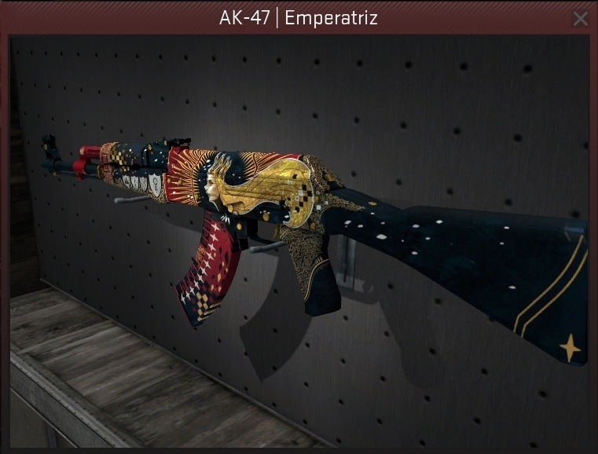
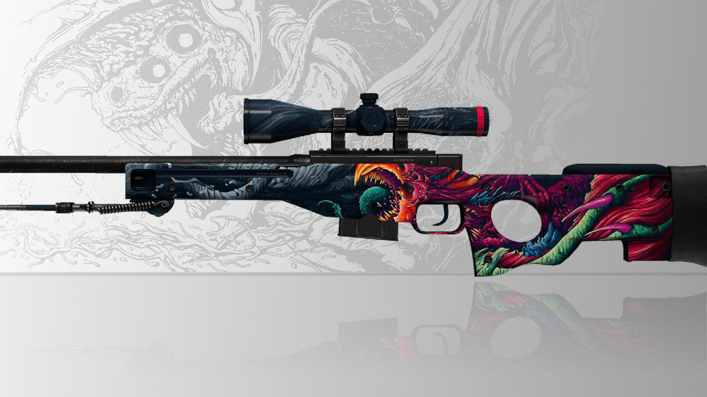
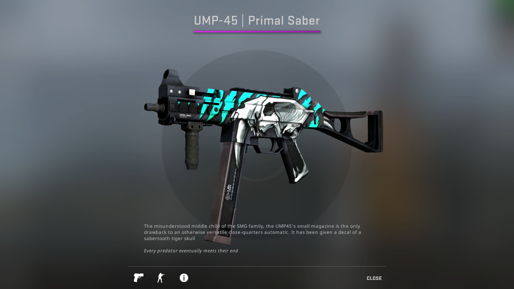

La Desert Eagle es una pistola semiautomática de grueso calibre accionada por los gases del disparo, diseñada por la firma estadounidense Magnum Research y fabricada principalmente en Israel por IMI (Industrias Militares de Israel), ahora Israel Weapons Industry. La producción fue transferida a Saco Defense en Maine entre 1996 y 2000, de allí la denominación XIX, pero volvió a Israel cuando Saco fue comprada por General Dynamics.
AK-47

El Avtomat Kalashnikova modelo 1947 (del ruso Автомат Калашникова образца 1947 года) o más conocido por el acrónimo AK-47 (que recibe en nombre de su diseñador y la fecha en la que la creó) es un fusil de asalto soviético, de calibre 7,62 mm, diseñado por Mijaíl Kaláshnikov, combatiente ruso durante la Segunda Guerra Mundial. Fue el fusil oficial de la Unión Soviética entre 1951 y 1978. En diciembre de 2007, el AK-47 llega a ser el arma de fuego de mayor producción de la historia, con cerca de 80 millones de unidades manufacturadas.
AWP

El Accuracy International Arctic Warfare Police (AWP) es una familia de fusiles de francotirador de cerrojo manual diseñada y fabricada por la compañía británica Accuracy International. Se ha hecho popular como fusil de caza, de policía y militar desde su introducción en los años ochenta.
UMP-45

El UMP (Universale Maschinepistole, «subfusil universal» en alemán) es un subfusil desarrollado y manufacturado en Alemania por Heckler & Koch. El UMP ha sido adoptado por diversas fuerzas armadas y agencias policiales, como la Oficina de Aduanas y Protección Fronteriza de los Estados Unidos.